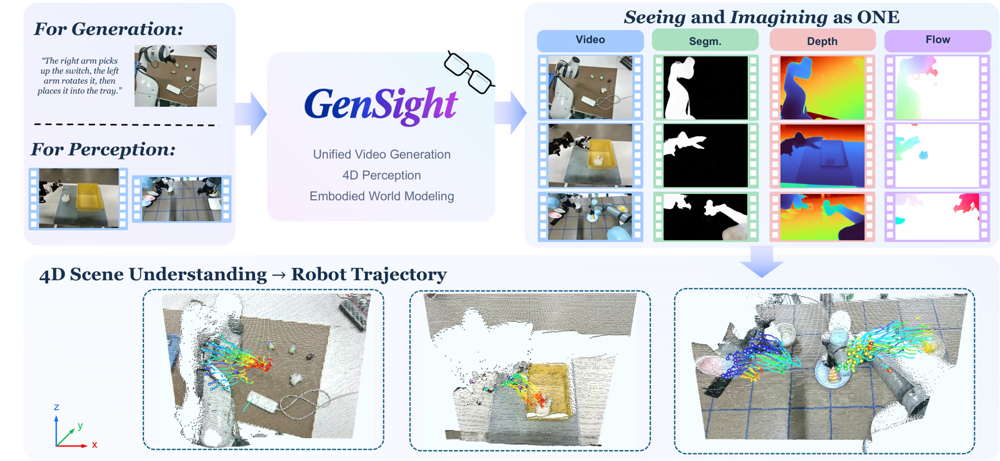
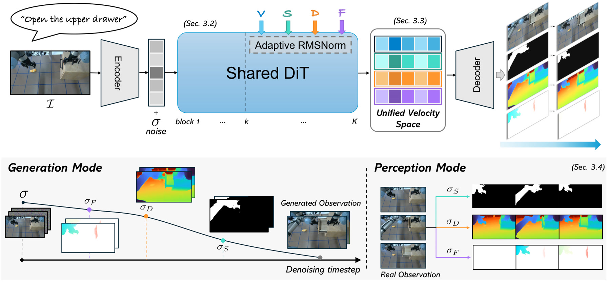

Seeing and Imagining as One: Unified Video Generation
and 4D Perception
for Embodied World Modeling
An embodied world model should not only imagine plausible futures but also perceive the geometry, semantics, and motion of the evolving world. GenSight folds both into one pretrained video diffusion transformer — video, depth, embodiment segmentation, and first-frame-relative 2D flow share a single latent representation, a single backbone, and a single prediction space.

Each dense modality is mapped to a three-channel image-like sequence and encoded by the same frozen video autoencoder used for RGB. Modality-specific work is confined to a deterministic encode/decode interface — no learnable per-modality modules.
The first k blocks compute task-agnostic features once; the rest share all Transformer weights and gain task dependence only through task-adaptive RMSNorm.
Generation and perception are both trained as velocity regression on a shared noise sample. The noise cancels in the difference, leaving a clean cross-modal residual zV − zm — dense outputs need no denoising trajectory of their own.
One model, two modes: multi-step generation that reads dense outputs along the denoising path, and single-step perception from an observed video. Both share one readout and decoder — no per-modality denoising.
Shared trunk, task-modulated blocks, one frozen autoencoder — and the two inference regimes it supports.

From an initial frame and a text prompt, the model runs K denoising steps to synthesize future RGB. When the trajectory reaches a modality's readout level σ*m, that dense stream fires once and its latent is reconstructed relative to the model's own video estimate.
Given an observed video, the noisy state is built directly at σ*m. A single forward pass yields the dense prediction — same readout, same decoder, no iterative denoising.
Given only an initial frame and a text prompt, GenSight generates the future video together with aligned depth, embodiment mask, and first-frame-relative 2D flow — all read out of the same denoising pass.
Input prompt
The same weights, now fed real video. Each dense modality is recovered in a single forward pass from a noisy state built directly at that modality's readout level — no iterative denoising.
Episode
A single unified model, compared side by side with specialist depth, flow, and segmentation estimators — and with dedicated video generators.
All generators receive the same initial frame and input prompt.
Input prompt Turn and place switch with both arms
Video, depth and 2D-flow metrics on the RoboMIND task-OOD set (lower is better unless marked ↑).
| Method | Video | Depth | 2D Flow | ||||||
|---|---|---|---|---|---|---|---|---|---|
| FVD ↓ | FID ↓ | PSNR ↑ | LPIPS ↓ | AbsRel ↓ | δ1 ↑ | nEPE ↓ | AAEtop1% ↓ | EPE ↓ | |
| RoboMIND 2.0 | |||||||||
| Wan2.2-I2V-A14B | 69.37 | 50.01 | 17.13 | 0.3083 | — | — | — | — | — |
| RynnWorld4D | 73.45 | 47.90 | 18.07 | 0.2661 | 8.53 | 92.55 | 1.133 | 45.14 | 4.936 |
| Cosmos3-Nano | 44.97 | 42.09 | 16.90 | 0.3002 | — | — | — | — | — |
| GenSight | 14.55 | 16.12 | 18.01 | 0.2296 | 7.88 | 93.17 | 0.427 | 23.10 | 7.089 |
All methods receive the same observed RGB video.
Recovered by lifting predicted depth with first-frame-relative 2D flow — not produced by a separate output head.
One scale shared by every panel and fixed for the whole clip. Zero means the predicted track sits exactly on the ground-truth point; errors are clamped at 33.7 cm and above.
Reading the panels. Each card holds one method seen twice — head-on and rotated 45°. Head-on, most of the tracks look plausible; the colour is what gives them away, since it encodes distance from the ground-truth point rather than anything about the shape.
Why the rotated view matters. Rotating the camera exposes the depth error a method carries. Track4World is the clearest case — convincing head-on, visibly offset in depth from the side. Accurate Z-axis depth is what puts GenSight ahead on absolute ADE/FDE, while residual frame-to-frame depth jitter is what costs it a little on the displacement variants.
Metrics on RoboMIND with ground-truth RGB input.
| SAM 3 | 73.5 |
| GenCeption | 67.5 |
| GenSight | 88.7 |
| Method | RMSE ↓ | AbsRel ↓ | δ1 ↑ |
|---|---|---|---|
| VDA | 13.12 | 7.4 | 94.0 |
| DA3mono | 15.65 | 13.2 | 81.7 |
| DA3stream | 16.17 | 13.2 | 85.3 |
| DVD | 15.91 | 7.6 | 92.9 |
| VGGT-Ω | 13.11 | 5.9 | 94.5 |
| GenCeption | 15.89 | 8.5 | 90.7 |
| GenSight | 4.76 | 2.4 | 99.1 |
| Method | EPE ↓ | ADEabs / disp ↓ | FDEabs / disp ↓ |
|---|---|---|---|
| RAFT (GT depth) | 11.2 | 7.04 / 6.88 | 7.49 / 7.40 |
| RAFT (pred. depth) | 9.63 | 9.63 / 7.68 | 9.95 / 7.92 |
| Any4D | 18.4 | 15.26 / 6.72 | 16.93 / 7.97 |
| V-DPM | 25.2 | 24.17 / 4.88 | 26.24 / 7.14 |
| Track4World | 6.8 | 20.31 / 6.92 | 23.99 / 9.06 |
| GenSight | 5.2 | 7.39 / 7.68 | 9.51 / 9.87 |
Qualitative rollouts and unified readouts on held-out manipulation episodes from new domains and scenes.
Input prompt: Pick up the tissue box and put it on the laptop.
Generated RGB, depth, flow and embodiment segmentation share one model; 2D tracking is shown where available.
RoboTwin results moved here from the task-comparison tables.
@article{feng2027gensight,
title = {Seeing and Imagining as One: Unified Video Generation and 4D Perception for Embodied World Modeling},
author = {Haitang Feng and Zhuoman Liu and Zhennan Wang and Sheng Wang and Juelin Li and Chengzhi Zhao and Hexiang Wei and Lin Shao},
year = {2027}
}